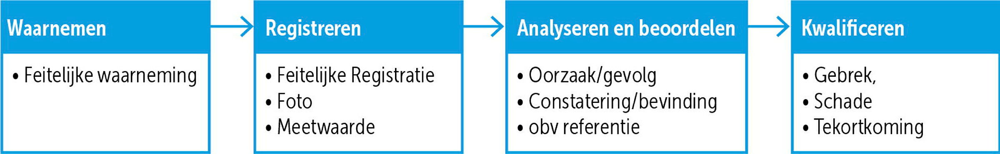
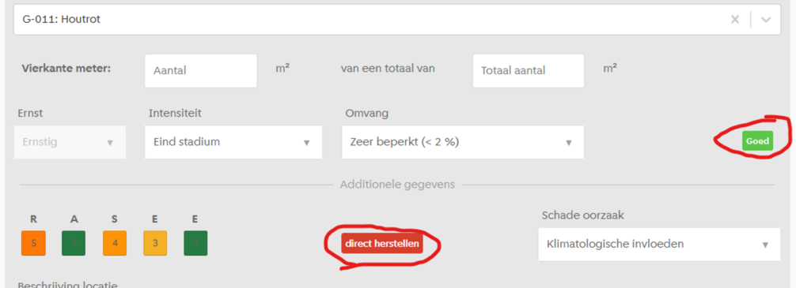
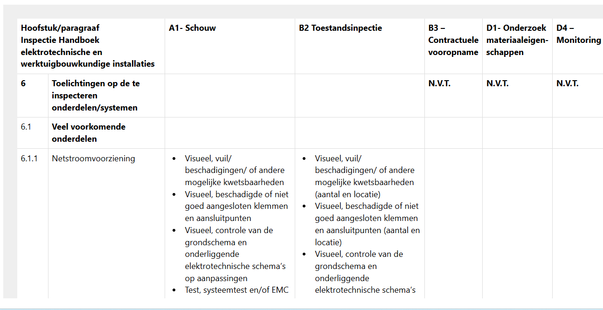

Dit document beschrijft standaard dataspecificaties voor de inspecties en onderzoeken aan civiele kunstwerken uit de CUR117, zodat inspectieresultaten als data verwerkt kunnen worden, en beschikbaar komen voor analyses van het areaal van een of meerdere beheerders, of van specifieke kunstwerken of bouwdelen. Vertrekpunt is een start-dataset met een objectpaspoort en een decompositie (object, element, bouwdeel, component) op basis van IMBOR en de NEN 2767. Daarop volgen de dataset voor de technische inspectie — van waarnemen en feitelijke waarneming tot analyseren en beoordelen, kwalificeren en een geaggregeerde conditiescore volgens de NEN 2767 — en de datasets voor de risico-analyse en het hersteladvies. De specificaties sluiten aan op bestaande standaarden (IMBOR, NEN 2767) en bieden een eenvoudig instapmodel waarmee beheerders en marktpartijen gezamenlijk een betrouwbaar, landelijk beeld kunnen opbouwen van de conditie, de risico's en de vervangings- en renovatieopgave van civiele kunstwerken.
Deze samenvatting is gemaakt met hulp van AI. De rest van het document is geschreven door een mens.
1. Inleiding
1.1 Aanleiding
Nederland staat voor een grote vervangings- en renovatieopgave van civiele kunstwerken, waarbij mobiliteit en veiligheid onder druk kunnen komen te staan. Verouderende infrastructuur vraagt om tijdige en goed onderbouwde beslissingen over ingrepen. Tegelijkertijd groeit de behoefte aan betere coördinatie tussen partijen, zodat werkzaamheden slim kunnen worden gepland met zo min mogelijk hinder voor gebruikers. Volgens het onderzoek naar de staat en benutting van civiele kunstwerken van TNO [prognose-vernieuwingsopgave-2023] is het essentieel om op landelijk niveau te beschikken over goede data over civiele kunstwerken voor:
Collectieve, nationale besluitvorming over de vervanging en renovatie van kunstwerken, zodat mobiliteit en veiligheid gewaarborgd zijn zonder onnodige investeringen te doen.
Betere uitwisseling van informatie met ketenpartners in ontwerp, productie en aanleg zodat arbeidstijdbesparend en kostenefficiënt gewerkt kan worden en het behalen van de maatschappelijke opgaven in de bouw daarmee uitvoerbaar wordt. Daarbij is essentieel dat overheden, beheerders en marktpartijen hun gegevens op een vergelijkbare manier vastleggen en kunnen delen.
1.2 Context
In de Verkenning informatiemodel civiele kunstwerken is geconstateerd dat een gecoördineerd nationaal vernieuwingsprogramma de beste methode is om de vervangings- en renovatieopgave aan te pakken. In de praktijk is de verantwoordelijkheid verdeeld over 400 overheidsbesturen met hun eigen bestuurlijke verantwoordelijkheid. CROW kan een bescheiden rol spelen door kennisontwikkeling en -uitwisseling met lokale en regionale partijen te organiseren. De meerwaarde ligt daarbij in de samenwerking met opdrachtgevers én opdrachtnemers die gezamenlijk kunnen bepalen welke vraagstukken als eerste moeten worden opgepakt (collectieve kennisagenda) en welke informatie daarbij kan worden uitgewisseld binnen de beperkingen van bestaande systemen. De eerste projecten die daaruit voortkomen in 2026 zijn:
Familieaanpak civiele kunstwerken: in het samenwerkingsverband van Noord-Hollandse gemeenten, provincies Noord-Holland, Rijkswaterstaat en ProRail "Samen Slimmer Renoveren en Vervangen" wordt gewerkt aan een dashboard waarin gegevens over civiele kunstwerken worden samengebracht en rechtstreeks worden gevoed vanuit assetinformatiesystemen. Daarmee wordt dubbele registratie voorkomen en blijft de assetinformatie de primaire bron. Door de samenvoeging van gegevens kan een gezamenlijk leertraject ontstaan, waarin nationale kengetallen en risico-inschattingen steeds verder worden aangescherpt voor veelvoorkomende soorten civiele constructies. CROW stelt daarbij dataspecificaties op van families van kunstwerken waarover collectieve inschattingen kunnen worden gedaan van constructieve veiligheid.
Dataspecificaties inspecties en onderzoeken civiele kunstwerken: Om te zorgen dat de (semi-)overheden steeds over de actuele data beschikken van hun civiele kunstwerken zal moeten worden gewerkt aan standaardisering van de data die vanuit de markt geleverd wordt. Het project begint met de onderzoeken en inspecties vanuit de CUR-117 die rechtstreeks informatie leveren over de staat van een kunstwerk. Daarom is de aanbeveling om een werkgroep te beginnen waarin marktpartijen en overheden samen de uit te wisselen informatie standaardiseren in aanvulling op de Beheersystematiek Kunstwerken en de CUR-117. Beide kennisproducten komen daarbij beter op elkaar aan te sluiten. Standaardisatie van datasets en termen vinden plaats via het Informatiemodel IMBOR en samenhangende datastandaarden daaromheen.
1.3 Werkgroep
CROW en Platform Bruggen hebben een werkgroep samengesteld met opdrachtgevers, opdrachtnemers en softwareleveranciers. Deze werkgroep heeft als opdracht om standaarddatasets vast te stellen die kunnen worden geleverd bij de onderzoeken zoals beschreven in CUR117 Inspectie van civiele kunstwerken. Deze datasets sluiten aan op bestaande standaarden (zoals IMBOR en NEN 2767) en moeten toepasbaar zijn binnen de praktijk van adviesbureaus, provincies, gemeenten en beheerders.
De werkgroep:
Selecteert een relatief eenvoudige methode waarmee de conditie van de meest voorkomende bruggen goed vastgesteld kan worden.
Brengt in kaart welke gegevens minimaal noodzakelijk zijn voor inspecties aan civiele kunstwerken. Deze gegevens zijn beschreven in de CROW-CUR Aanbeveling 117:2020 Inspectie en advies civiele kunstwerken en daarvan afgeleide handboeken inspectie per materiaal.
Formuleert voorstellen voor landelijke standaarddatasets, afgestemd met de sector.
De resultaten worden in een openbare consultatie voorgelegd, om de volgende vragen te kunnen beantwoorden:
Is dit praktisch toepasbaar, sluit het aan op de praktijk.
Zijn inspectietools en beheersystemen klaar om deze gegevens te leveren?
1.4 Doel
Doel van voorliggende documentatie is het beschrijven van standaard dataspecificaties voor inspecties en onderzoeken aan civiele kunstwerken waarmee:
Inspectieresultaten uniformer kunnen worden aangeleverd, geïnterpreteerd en opgeslagen;
Asseteigenaren sneller en betrouwbaarder kunnen sturen op constructieve veiligheid en beheermaatregelen;
Ketenpartners in ontwerp, uitvoering en beheer beschikken over dezelfde informatiestandaarden;
Een landelijk beeld van de conditie en risico’s van civiele kunstwerken kan worden gevormd, waarmee collectief betere voorspellingen gedaan kunnen worden van risico's en de benodigde beheersmaatregelen.
Deze datasets sluiten aan op de bestaande landelijke standaarden (IMBOR, NEN 2767). IMBOR en de decompositie van de NEN2767 worden in een volgende versie van IMBOR geïntegreerd, deze uitwerking was nog niet beschikbaar tijdens het schrijven van dit document. Deze datasets zijn een aanvulling op, en geen vervanging van, de rapportages die beschreven staan in de CUR117.
1.5 Strategie
De strategie is om te beginnen met het standaardiseren van data-uitwisseling voor de meest voorkomende bruggen, en daarvoor een eenvoudig instapmodel te bieden om data uit te wisselen. Hiermee kunnen gemeenten en samenwerkingsverbanden van gemeenten snel informatie gaan verzamelen waarmee de omvang van de vervangings- en renovatieopgave voor een groot deel van het areaal efficiënt in kaart gebracht kan worden, en de kennis en aandacht van experts kan uitgaan naar de complexere bruggen.
1.6 Scope en leeswijzer
De scope van dit document is de inhoud van de datasets bepalen die horen bij de inspecties en onderzoeken uit de CROW-CUR Aanbeveling 117:2020 Inspectie en advies civiele kunstwerken en bijbehorende handboeken inspectie van diverse materiaalsoorten.
Om een onderzoek te kunnen starten is een objectpaspoort nodig met een decompositie, dat is de opdeling in elementen, bouwdelen en eventueel componenten die moeten worden onderzocht. Zie hoofdstuk 2.
In onderstaande tabel de scope ten opzichte van de beschreven onderwerpen in de CUR117 en het hoofdstuk waarin dit is uitgewerkt.
Buiten scope: Meetwaarde, schadeomvang uit complexere metingen, berekeningen of laboratoriumonderzoeken worden nog niet als data uitgewisseld, maar in rapportages opgeleverd
D2
Verfijnde financiële onderbouwing
D3
Verificatieberekening
D4
Monitoring
In hoofdstuk 6 wordt een overzicht gegeven van de verdieping die de inspectiehandboeken in het CUR portfolio geven op algemene gebrekssoorten en maatregelen uit de NEN2767.
Buiten scope:
Formele dataspecificaties op basis van IMBOR, deze worden in een vervolgproject in 2027 uitgewerkt.
Afspraken over dataformaten of dataservices.
2. Startinformatie Inspecties en onderzoeken
2.1 Inleiding
Voor de start-dataset is een objectpaspoort nodig met een decompositie. We gaan ervan uit dat deze uit een beheersysteem gehaald worden. Als er nog geen assetregistratie bestaat van het kunstwerk is het noodzakelijk deze uit te werken.
Welke typen kunstwerken in het areaal zitten kan bepaald worden op basis van de assetregistratie met IMBOR en decomposities uit de NEN2767. In dit hoofdstuk is dat uitgewerkt voor de voorbeelden:
Vaste brug beton groot
Vaste brug beton klein
2.2 Start-dataset technische inspectie
In onderstaande tabel wordt weergegeven welke informatie minimaal beschikbaar moet zijn om een datagedreven inspectie uit te voeren. Als ook objecten in de omgeving van het kunstwerk moeten worden geïnspecteerd zoals genoemd in CUR117 ("Reikwijdte omgeving in scope") moeten deze objecten ook worden opgenomen in de start-dataset.
1 De volgende objecttypes uit IMBOR worden gebruikt om onderscheid te kunnen maken: Vaste brug (bij vaste brug wordt een verdiepingsslag gemaakt op basis van de in IMBOR gedefinieerde verschijningsvormen), Viaduct en Onderdoorgang.
2 Verplichte informatie bij een Beheerobject volgens IMBOR.
3 In IMBOR kan een object geschikt zijn voor één of meerdere soorten modaliteit.
4 IMBOR schrijft niet voor welke geometrische representatie bekend moet zijn, gebruikelijk in beheersystemen is een 2D-vlak.
De start-dataset kan grotendeels worden gedefinieerd op basis van de geintegreerde IMBOR en NEN2767-decompositie. Dit kan gebeuren nadat NEN en CROW de integratie voltooid hebben, naar verwachting ergens in 2027.
2.3 Voorbeeld: Vaste Brug Beton groot en klein
Vaste brug beton klein:
Modaliteit: Fiets en/of voetganger
Vaste brug beton groot:
Modaliteit: Licht wegverkeer
In de tabel hieronder de veelvoorkomende onderdelen, met linkjes naar IMBOR.
De technische inspectie kan van start als de start-dataset geleverd is en duidelijk is welke objecten onderzocht moeten worden. In de dataset technische inspectie wordt de feitelijke waarneming vastgelegd met de registratie van gebreken, de analyse en beoordeling ter plaatse van oorzaken en gevolgen, de omvang en gebreksscore op niveau bouwdeel / component en de verwerking naar een globale conditiescore volgens de NEN 2767.
In de CUR117 staat onderstaande proces beschreven, de dataset bevat de hele flow plus de toevoeging van de conditiescore.

Figuur 1 De stappen om te komen tot een kwalificatie van de toestand van het kunstwerk
3.2 Dataset technische inspectie
In onderstaande tabel staat de inhoud van de dataset technische inspectie.
Dataset technische inspectie
Onderwerp
Attribuut
Standaard
Opmerking
Waarnemen
Inspectiemoment
CUR117
datum, tijd
Naam inspecteur
CUR117
voornaam, achternaam, bedrijf
Feitelijke waarneming
Weersgesteldheid
CUR117
temperatuur, luchtvochtigheid
Locatie waarneming
CUR117
Bouwdeel of component, in schadeomschrijving kan nader beschreven worden waar op het bouwdeel / de component
Omvang, hoeveelheid
CUR117
Aantal van dit gebrek/deze schade/deze tekortkoming op het bouwdeel / de component
Omvang, Eenheid
CUR117
strekkende meters, oppervlak of inhoud
Schadeomschrijving
CUR117
Omschrijving en geschatte invloed op gebruiksveiligheid
Fotoregistratie
CUR117
Uitgangspunt is dat locatie, datum en tijdstip foto's overeenkomen met de waarneming. In dataset: Naam fotobestand(en)
Inspectietekening
CUR117
optioneel, ingetekende gebreken. In dataset: bestandsnaam tekening(en)
Analyseren en beoordelen
Oorzaak
CUR117
eerste kwalitatieve oorzaak
Gevolg
CUR117
Gevolg voor het functioneren en de onderhoudsstaat.
De handboeken geven voor elke materiaalsoort soorten schadebeelden, ook kunnen de schadebeelden uit de NEN2767 genoemd worden in de waarneming.
Kwalificatie
CUR117
gebrek, schade, tekortkoming, waarneming
Functionele toestand
CUR117
van alle zichtbare onderdelen, per onderdeel.
Ernst gebrek
NEN2767
op niveau bouwdeel / component
Intensiteit
NEN2767
op niveau bouwdeel / component
Omvang
NEN2767
op niveau bouwdeel / component
Conditiescore
Conditiescore
NEN2767 en CUR117
op niveau object. CUR117 voegt toe: Vervangingsfactor in plaats van berekende levensduurkosten, om te kunnen generaliseren op areaalniveau.
1 De gebrekssoort uit de NEN 2767-4 webapplicatie is auteursrechtelijk beschermd. Hier moet een oplossing voor komen om dit in een standaard dataspecificatie te kunnen opnemen.
Voorlopig buiten scope dataspecificatie: Meetwaarde, meting of onderzoek. Hieronder vallen complexe metingen, laboratoriumonderzoeken, tellingen. Voorlopig nog niet als data vastleggen maar als rapportages meeleveren.
3.3 Ontologie dynamische gegevens
CROW heeft een Ontologie Dynamische Gegevens ontwikkeld. Een deel van de dataset kan worden afgeleid uit deze ontologie. Hiervoor is een eerste uitwerking gemaakt: Dataset technische inspectie
3.4 Geaggregeerde conditiescore maken
De NEN2767 beschrijft in stappen hoe een geaggregeerde conditiescore tot stand komt. De werkgroep CUR117 voegt daaraan een tabel met vervangingsfactoren toe voor bouwdelen en elementen, om te kunnen generaliseren op areaalniveau.
Het bouwdeel krijgt een gebreksscore op basis van alle geconstateerde gebreken.
Het element krijgt een gebreksscore op basis van alle bouwdelen, waarbij de bouwdelen meetellen op basis van de vervangingswaarde.
Het object krijgt een gebreksscore op basis van alle elementen, waarbij de elementen meetellen op basis van de vervangingswaarde.
Om te kunnen werken met de berekeningsmethode conform de NEN2767-1, dient per bouwdeel en element de vervangingswaarde bepaald te worden. Dit per stuks berekenen voor de meest voorkomende kunstwerken in Nederland is een te tijdrovende exercitie, waar een benadering volstaat om een goed beeld te krijgen. Daarom wordt in de vereenvoudigde methode bij CUR117 in plaats van de vervangingswaarde een vervangingsfactor gebruikt, eenmalig per bouwdeel en element. In de meegeleverde dataset is per bouwdeel en element zichtbaar wat de vervangingsfactor is.
3.4.1 Benaderingsmethode vervangingswaarde
Voor de vervangingswaarde van bouwdelen en elementen wordt een benadering gebruikt in de vorm van een indicatieve, relatieve vervangingswaarde (VW). Hierbij is de onderlinge verhouding van de vervangingswaarden van de bouwdelen of elementen maatgevend. Dit wordt gedaan met behulp van een vervangingsfactor. Deze factor staat als weegfactor voor het bouwdeel of element. De reden hiervoor is dat het zeer omslachtig is om voor elk object de vervangingswaarde per bouwdeel en element te bepalen. Dit is zeer tijdrovend en qua berekening staat een vervangingsfactor gelijk aan een vervangingswaarde.
Alle vervangingsfactoren van elk bouwdeel en element zijn uitgewerkt in een tabel op basis van de volgende onderbouwing:
Tabel 3: Uitgangspunt bepaling vervangingsfactor bouwdelen en elementen
Waarde
Toelichting
1-2
Klein geneuzel
3-4
Kleinere onderdelen en secundaire elementen (eenvoudig te vervangen)
5-6
Dure installaties en secundaire elementen (lastig te vervangen)
7
-
8
Grote primaire elementen (vervangbaar)
9
-
10
Grote primaire elementen (niet vervangbaar)
De vervangingswaarden van de verschillende bouwdelen worden opgeteld tot de ‘Totale
VervangingsWaarde’ (TVW).
Voor ieder bouwdeel wordt de correctiefactor bepaald.
Met de correctiefactor tellen de bouwdelen met een hoge score (slechte staat) ‘harder’ mee.
De correctiefactoren staan in de onderstaande tabel.
Met behulp van de vervangingswaarden per bouwdeel en de correctiefactoren wordt de
‘Gecorrigeerde Totale VervangingsWaarde’ (GTVW) van de bouwdelen bepaald.
De GTVW wordt gedeeld door TVW.
Met de uitkomst hiervan kan de score voor het element bepaald worden, zie tabel 2.
Correctiefactoren:
Score
Correctiefactor
1
1,0
2
1,02
3
1,1
4
1,3
5
1,7
6
2,0
Herleiding score vanuit ‘uitkomst’:
Uitkomst
Score
Uitkomst ≤ 1,01
1
1,01 < Uitkomst ≤ 1,04
2
1,04 < Uitkomst ≤ 1,15
3
1,15 < Uitkomst ≤ 1,40
4
1,40 < Uitkomst ≤ 1,78
5
Uitkomst > 1,78
6
3.4.2 Voorbeeld
3.4.2.1 Voorbeeld voor het bepalen van 2 elementscores
Element
Bouwdeel
Conditiescore
Vervangingsfactor
Correctiefactor op basis van conditiescore
Gecorrigeerde totale waarde (vervangingswaarde × correctiefactor)
Hoofddraagconstructie
Rijdek
3
10
1,1
11
Leuning
4
2
1,3
2,6
Langsligger
2
8
1,02
8,16
Totaal
20
21,76
Kerende constructie
Damwand
3
6
1,1
6,6
Deksloof
6
1
2
2
Totaal
7
8,6
3.4.2.2 Voorbeeld conditieherleiding
Element
Berekening (optelling gecorrigeerde totale waarde / optelling vervangingsfactor)
Conditieherleiding
Conditiescore
Hoofddraagconstructie
21,76 / 20
1,09
3
Kerende constructie
8,6 / 7
1,23
3
3.4.2.3 Voorbeeld objectscore
De aggregatie van elementscore naar objectscore dient conform de NEN uitgevoerd te worden op basis van berekeningssystematiek. De methode is gelijk aan de aggregatie van bouwdeel- naar elementniveau.
Onderstaand een voorbeeld voor het bepalen van 2 elementscores
Element
Conditiescore
Vervangingsfactor
Correctiefactor op basis van conditiescore
Gecorrigeerde totale waarde (vervangingswaarde × correctiefactor)
Hoofddraagconstructie
3
10
1,1
11
Kerende constructie
4
6
1,3
7,8
Totaal
16
18,8
3.4.2.4 Voorbeeld Conditieherleiding kunstwerk
Kunstwerk
Berekening (optelling gecorrigeerde totale waarde / optelling vervangingsfactor)
Conditieherleiding
Conditiescore
Brug 1
18,8 / 16
1,18
3
4. Risico-analyse
4.1 Inleiding
De geaggregeerde conditiescore op basis van de NEN2767 geeft een globaal inzicht in de lange termijn conditie van een kunstwerk. Voor de korte termijn moet voor gebreken ook gekeken worden naar de risico's, die een ingreep op korte termijn vragen.

Figuur 2 Voorbeeld risico-analyse houtrot versus goede conditiescore
De onderwerpen van de risico-analyse kunnen verschillen per opdrachtgever omdat er verschil in beleid en bedrijfswaarde kan optreden. Dit is in principe aan de beheerder. In dit document wordt een eenvoudige methode voorgesteld die de beheerder naar eigen inzicht kan uitbreiden.
De opdrachtgever kan een risico-matrix meegeven zoals in het voorbeeld. De dataset voor de risico-analyse is vervolgens zeer eenvoudig: bij elk gebrek wordt een score meegegeven van 1-4 (zie onderstaande tabel) met een tekstuele toelichting.
Risicoklasse
Betekenis / maatregel
Hersteltermijn
Score
Laag
Acceptabel risico, maatregel niet uitvoeren, Controle bij volgende inspectie (4 jaar later)
> 5 jaar herstellen
4
Middel
Maatregelen meenemen waar mogelijk in instandhoudingsplan
3-5 jaar herstellen
3
Hoog
Onacceptabel risico, maatregel toetsen en verwerken in instandhoudingsplan
1-2 jaar herstellen
2
Zeer Hoog
Onacceptabel risico, maatregel toetsen en verwerken in instandhoudingsplan
direct herstellen
1
5. Hersteladvies
5.1 Inleiding
Bij elke gebrekssoort kan een hersteladvies worden meegegeven door de inspecteur. Dat zijn de geadviseerde maatregelen, omvang herstelwerkzaamheden en eerste jaar en uiterste jaar van uitvoering. Dit geeft input voor de onderhoudsplanning.
5.2 Dataset Hersteladvies
Dataset Hersteladvies
Thema
Attribuut
Standaard
Opmerking
Onderhoudsadvies
Hoofdvakdiscipline
IMBOR
Vakdiscipline
CUR117
Maatregel
CUR117
De handboeken geven voor elke materiaalsoort soorten maatregelen; daarnaast zou gerefereerd kunnen worden aan besteksposten in de RAW.
Milieu- en verkeersmaatregelen
CUR117
De Verkeersmaatregelen komen uit de CROW-publicatie Werk In Uitvoering, milieumaatregelen onder meer uit CROW-publicatie Werken in en met verontreinigde grond
Beschrijving maatregel
CUR117
Beschrijving van de aanpak, de uitgevoerde analyse en het resulterende advies over de te nemen maatregel, benoemen van wetgeving, raakvlakken en randvoorwaarden
Omvang, Hoeveelheid
CUR117
Aantal maatregelen per bouwdeel / component
Omvang, Eenheid
CUR117
hoeveelheid strekkende meters of kubieke meters van een maatregel per bouwdeel / component
Startdatum
CUR117
Eerste jaar en uiterste jaar van invoering, conform de risico-analyse
Frequentie
CUR117
Omgevingsfactoren
CUR117
Beschrijving (omgevings)factoren, die voor uitvoering van de herstel- en/of onderhoudsmaatregelen van belang zijn
Eenheidsprijzen en bedragen kunnen worden bepaald in een beheersysteem, niet aangeleverd in het hersteladvies.
6. Inspectiehandboeken
6.1 Inleiding
De handboeken inspectie beschrijven de aanwezige kennis van gebruikte materialen, kritieke onderdelen en de daarmee samenhangende gebreken. Tevens geven zij per materiaal/onderdeel aan wat de aandachtspunten zijn voor inspectie en wat verwacht mag worden van het resultaat van de inspecties. Via de verwijzingstabellen zijn eisen gesteld binnen de gevraagde inspectiecategorie en daarbij te leveren informatie.
Handboek Inspectie Metselwerk (behorend bij CUR Rapport 117)
Uit deze handboeken komen specifieke schadebeelden en herstelmaatregelen die in de dataset kunnen worden opgenomen. Deze zijn reeds opgenomen in de "kruisjeslijst" en kunnen verwerkt worden in een gegevenswoordenboek voor gebruik in de dataspecificaties.

Figuur 3 De kruisjeslijst uit CROW-CUR Handboek 2:2020 Inspectie elektrotechnische en werktuigbouwkundige installaties (E&WI)
Handboek Inspectie Metselwerk (behorend bij CUR Rapport 117)
6.10 Oeverconstructies
Handboek oeverconstructies
7. Aanbevelingen
7.1 Start-dataset technische inspecties
De start-dataset kan grotendeels worden gedefinieerd op basis van de geintegreerde IMBOR en NEN2767-decompositie. Dit kan gebeuren nadat NEN en CROW de integratie voltooid hebben, naar verwachting ergens in 2027.
7.2 Dataset technische inspecties
CROW heeft een Ontologie Dynamische Gegevens ontwikkeld. Een deel van de dataset kan worden afgeleid uit deze ontologie. Hiervoor is een eerste uitwerking gemaakt: [Dataset technische inspectie](experimenten/cur117/CUR117 Inspectiemodel (Abstractie).mmd)
Aanbeveling is om dit uit te werken in een dataset.
7.3 Handboeken inspecties
De handboeken inspecties geven een verdieping waarbij per materiaalsoort een lijst kan worden gegeven van relevante schadebeelden en bijbehorende herstelmaatregelen. De volgende stappen worden voorgesteld in de uitwerking:
Dataficeren handboeken: Schadebeelden en maatregelen als termen en definities. Advies is hierbij om deze handboeken eerst te "dataficeren" zodat deze als termen en definities beschrikbaar zijn, en met de genoemde maatregel ook de bijbehorende teksten gevonden kunnen worden bij gebruik.
Publiceren gegevenswoordenboek CUR117. Daarna kunnen de schadebeelden en maatregelen gepubliceerd worden in een gegevenswoordenboek, waarnaar vanuit de dataset verwezen kan worden.
Bron-onafhankelijke datasetDe dataset technische inspecties kan voor de schadebeelden en maatregelen putten uit verschillende bronnen; advies is om geen van deze bronnen of waardelijsten als verplicht aan te wijzen, maar een vrij tekstveld te maken waarin een term wordt ingevuld, en daarnaasrt een referentie naar een van deze bronnen te verplichten. Hiermee is het risico dat de inspectiedatasets zelfbedachte termen en definities hanteren kleiner. Ook wordt hiermee voorkomen dat de auteurrsrechtelijk beschermde lijsten uit bijvoorbeeld de NEN2767 gepubliceerd moeten worden om gebruik in datasets mogelijk te maken.
7.4 Gerelateerde CROW publicaties
Diverse gerelateerde CROW-publicaties kunnen input leveren voor de datasets:
4. Publiceer een gegevenswoordenboek met de besteksposten uit de RAW, en onderzoek of deze overen komen met de maatregelen uit de inspectiehandboeken. Eventueel moeten deze geharmonieerd worden om te zorgen dat vanuit de meerjarenplanning input geleverd kan worden voor besteksposten voor uitvoering van werkzaamheden.
5. Publiceer een gegevenswoordenboek met verkeersmaatregelen uit de CROW-publicatie Werk in Uitvoering
6. Publiceer een gegevenswoordenboek met de milieumaatregelen uit de CROW-publicatie Werken in de met verontreinigde bodem.
7.5 Werk samen met softwareleveranciers
Om de informatie uit inspecties goed te kunnen opstellen en verwerken zijn goede apps nodig. Twee soorten softwareleveranciers spelen een rol;
Leveranciers van assetinformatiesystemen en beheersystemen. Deze moeten de geleverde datasets kunnen verwerken en opslaan bij de objectne.
Leveranciers van inspectie-apps die een inspecteur ondersteunen om direct buiten waarnemingen te kunnen vastleggen met foto's, schadebeelden, aantallen en hoeveelheden.
8. Definities
Asseteigenaar
Definitie uit het Standaard Rollenmodel: Een asseteigenaar in de gebouwde omgeving is de persoon of entiteit die verantwoordelijk is voor het strategisch beheer van assets, zoals gebouwen, infrastructuur, en andere fysieke objecten. De asseteigenaar stelt de doelen en kaders vast voor het beheer en onderhoud van deze assets. De rol van de asseteigenaar is cruciaal omdat deze op strategisch niveau bepaalt wat er nodig is om de assets in optimale staat te houden. Dit omvat het maken van beslissingen over nieuwbouw, vervanging, en onderhoud, evenals het vaststellen van de functionele eisen waaraan de assets moeten voldoen.
Beheerder
Definitie uit het Standaard Rollenmodel:Een beheerder in de context van de gebouwde omgeving is verantwoordelijk voor het beheer en de optimalisatie van een gebouw of infrastructuur. Dit kan variëren van het beheer van technische installaties tot het coördineren van facilitaire diensten.
Dataspecificatie
Een nauwkeurig afgebakende verzameling gegevens die essentieel zijn voor een specifiek proces, programma of beleidsvraag. De gegevens worden gespecificeerd op basis van een datastandaard.
Decompositie
Een decompositie is de samenstelling van een object, in technische termen: een bouwdeel heeft een "partOf" relatie naar het civiele kunstwerk.
IMBOR
Het IMBOR beschrijft de objecttypen die voorkomen in de openbare ruimte en de vaste objectgegevens die nodig zijn voor het beheer hiervan.
Zie ook deze website en deze viewer.
Levensduurkosten
Levensduurkosten zijn alle kosten die gedurende de gehele levenscyclus van een civiel kunstwerk worden gemaakt, vanaf ontwerp en aanleg tot en met beheer, onderhoud, vervanging en sloop. In de beoordeling van civiele kunstwerken vormen levensduurkosten een essentieel criterium om investeringen af te wegen tegen prestaties en risico’s. Door kosten integraal te benaderen (Total Cost of Ownership) kan een optimale balans worden gevonden tussen functionaliteit, duurzaamheid en financiële efficiëntie.
Maatregelen
Geplande acties gericht op het instandhouden of ontwikkelen van de functionaliteit van infrastructuurobjecten, zoals civiele kunstwerken.
Meerjarenonderhoudsplan
Een Meerjarenonderhoudsplan is een strategisch document waarin het verwachte onderhoud aan een object (zoals een brug, kade, gebouw of rioolstelsel) voor een langere periode — meestal 10 tot 50 jaar — wordt gepland en begroot. Het plan bevat een overzicht van te verwachten onderhoudsactiviteiten per jaar, de bijbehorende kosten, de timing van vervangingen, inspecties en renovaties en de relatie met prestatie-eisen of servicelevels.
NLCS
De NLCS is een 2D-tekenstandaard voor de openbare ruimte en infrastructuur. Deze open standaard bevat afspraken voor het omgaan met metadata, digitaal tekenen, het uiterlijk van de tekening en de coderingssystematiek en lagenstructuur van tekenwerk.
Zie ook deze website.
Restlevensduur
Verwachte periode waarin een object nog functioneel kan blijven voordat ontmanteling noodzakelijk wordt.
Risico's
Binnen de beoordeling van civiele kunstwerken zijn risico’s de kans dat een gebrek, schade of functieverlies zich voordoet in combinatie met de mogelijke gevolgen daarvan voor veiligheid, functionaliteit, beschikbaarheid, milieu of kosten. Risicoanalyse maakt het mogelijk om op gestructureerde wijze prioriteiten te stellen in inspectie, onderhoud en vervanging. Typische risicofactoren zijn materiaalveroudering, overbelasting, gebrekkig onderhoud en externe invloeden zoals verkeer of weersomstandigheden.
Vervangingswaarde
De kosten die gepaard gaan met het vervangen van een object. De vervangingswaarde wordt berekend op basis van de fysieke kenmerken van het object, bijvoorbeeld het aantal meters, vierkante meters of kubieke meters, en kostenkengetallen voor het object.